Stitch a journey
Pick the photos from a trip and Wayfarer draws the route, stop to stop, with how you travelled between them. Play it back as a film: the map flies and the prints land.
Tap a dot, rediscover a place
Every dot on the map is somewhere you've been. Tap it for your photos from there, by year. Zoom in and the dots split into the places within.
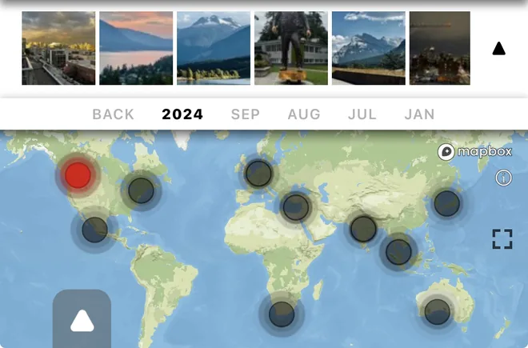
Every photo, matted
Place, country, year, in handwriting. Add a line of your own underneath, and a tip for the place: the thing worth knowing before you go.
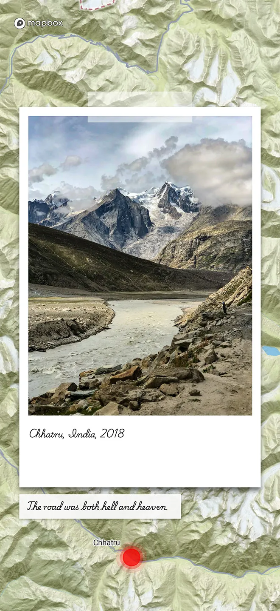
Tips, pinned to the spot
Write what you wish you'd known before you went: the hour, the entrance, the stall worth the queue. The tip stays on the spot where you stood, not the city, and travels with the photo into every journey you stitch.
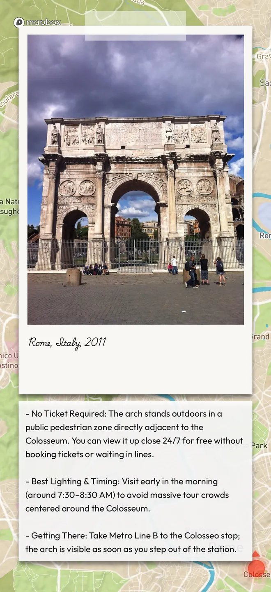
Share it your way
The photo, the frame with its map, a post or a story cut for Instagram, a journey as a film, or the journey itself to a friend with Wayfarer.
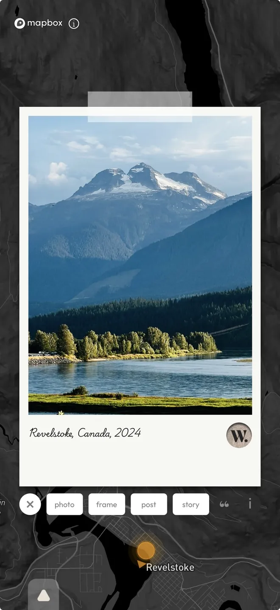
Map skins
Each skin changes the map, the matte, the type and everything you share. Free to wear in the app.
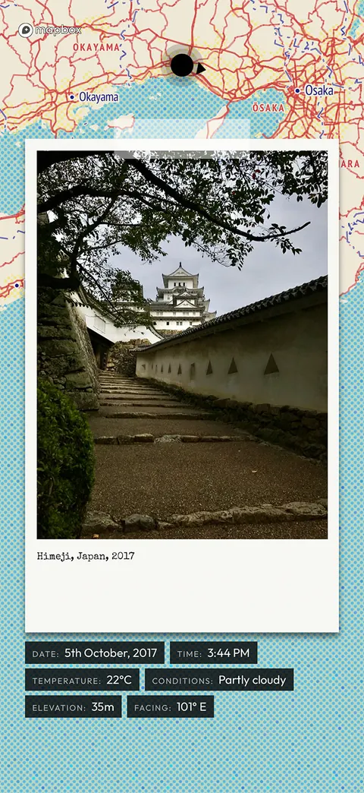
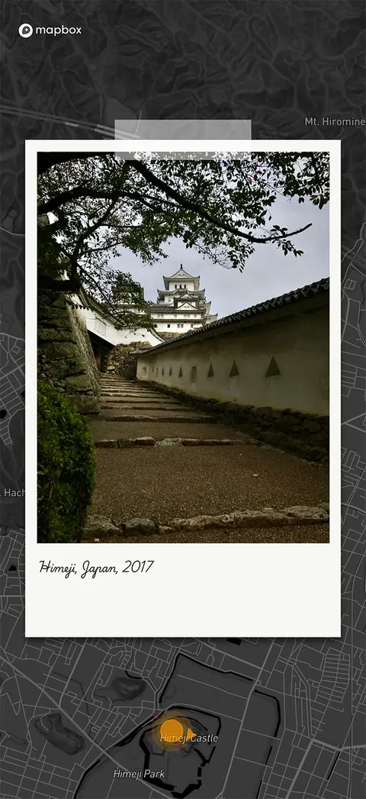
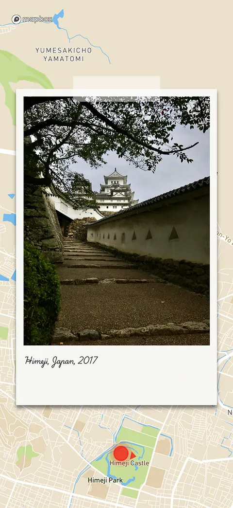
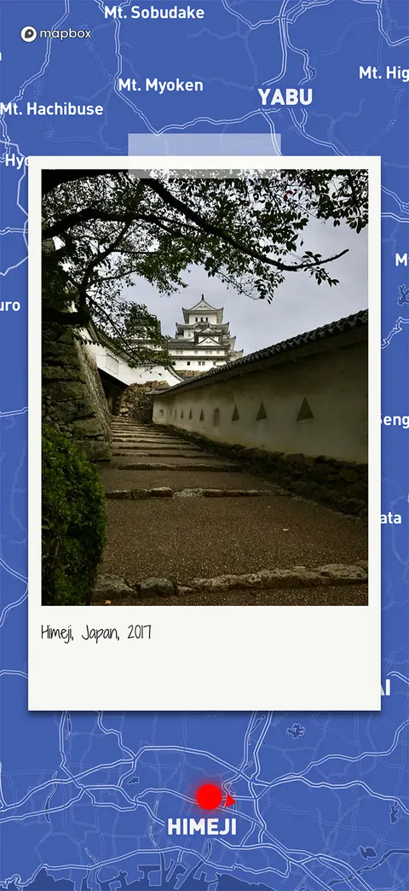
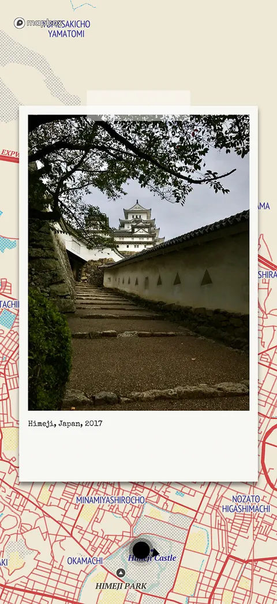
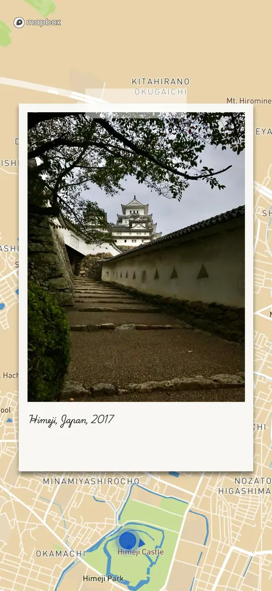
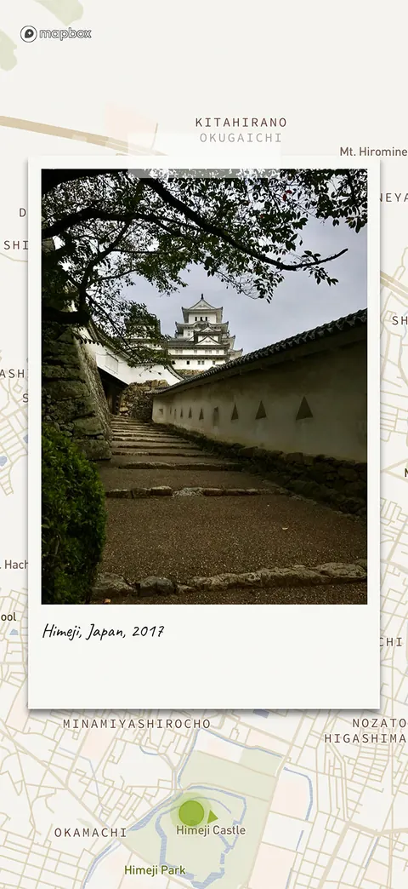
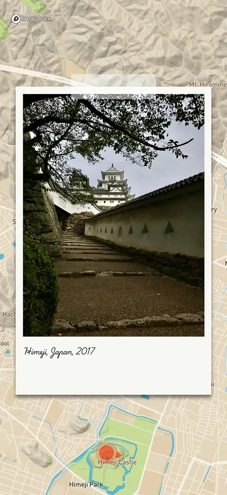
What surrounded the moment
Date, time, weather, temperature and elevation, read from the photo and the weather of that day.
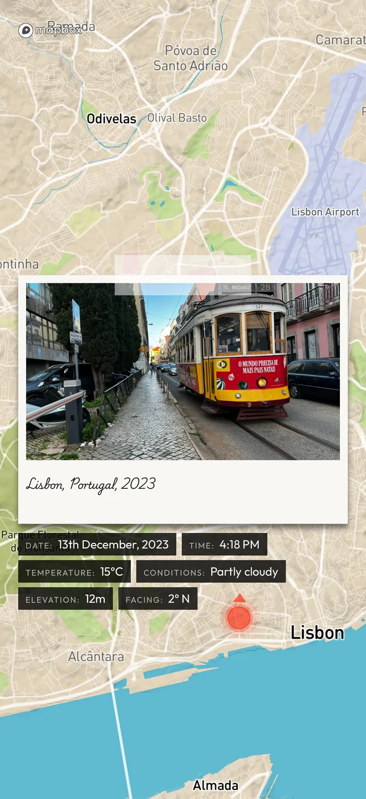